عظام القدمBones of the Foot
عملي · م04 · 8.9 دقيقةأقسام المحاضرة (12)
- عظام الطرف السفليBones of the Lower Limb
- عظام القدم: نظرة عامةBones of the Foot
- العظام الرصغيةTarsal Bones
- المجموعة الرصغية القريبةProximal Tarsal Group
- شوكة العقبHeel Spur (Calcaneal Spur)
- المجموعتان الرصغيتان المتوسطة والبعيدةIntermediate & Distal Tarsal Groups
- الأمشاط والسلامياتMetatarsals & Phalanges
- أقواس القدمArches of the Foot
- السمات الشعاعية الطبيعية للقدمNormal Radiological Features of the Foot
- السمات الشعاعية للقدم: القياساتRadiological Features of the Foot
- كسور عظم الكاحل وعظم العقبFractures of the Talus and Calcaneus
- كسور عظام المشطMetatarsal Fractures
عظام الطرف السفليBones of the Lower Limb
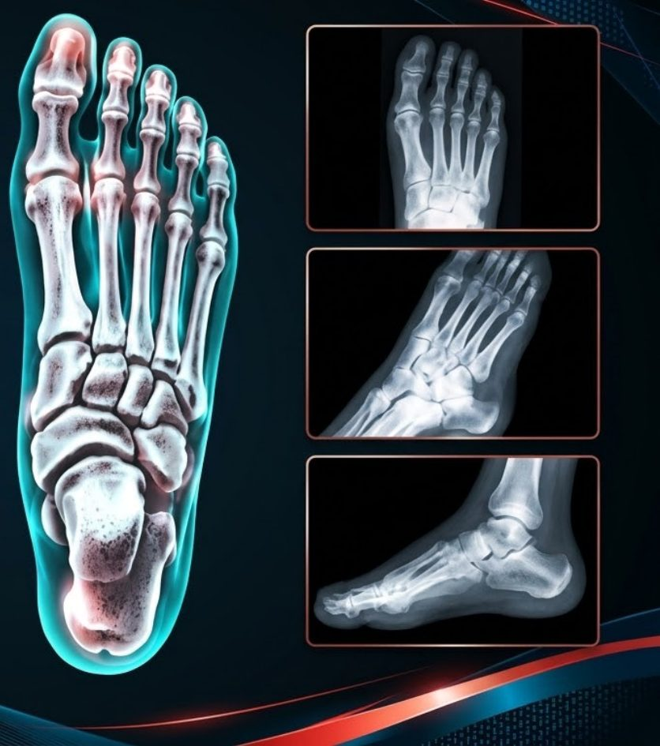
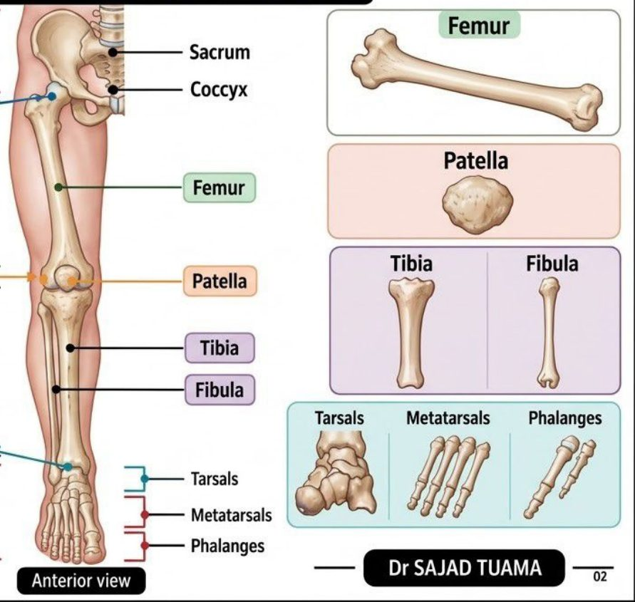
منطقة الوركHip region
- • Eliumالحرقفة
- • Ischlumالإسك
- • Pubisالعانة
مفصل الوركHip joint
- • Articulation between acetabulum and femoral headالمفصل بين الحُقّ ورأس عظم الفخذ.
الفخذThigh
- • Femurعظم الفخذ
مفصل الركبةKnee joint
- • Femurعظم الفخذ
- • Patellaالرضفة
- • Tibiaالظنبوب
- • Fibulaالشظية
الساقLeg
- • Tibiaالظنبوب
- • Fibulaالشظية
الكاحلAnkle
- • Tarsal bones (talus, calcaneus, navicular, cubold, cunelforms)العظام الرصغية (عظم الكاحل، وعظم العقب، والعظم الزورقي، والعظم النردي، والعظام الإسفينية).
القدمFoot
- • Tarsalsعظام الرصغ
- • Metatarsalsالأمشاط
- • Phalangesالسلاميات
عظام القدم: نظرة عامةBones of the Foot
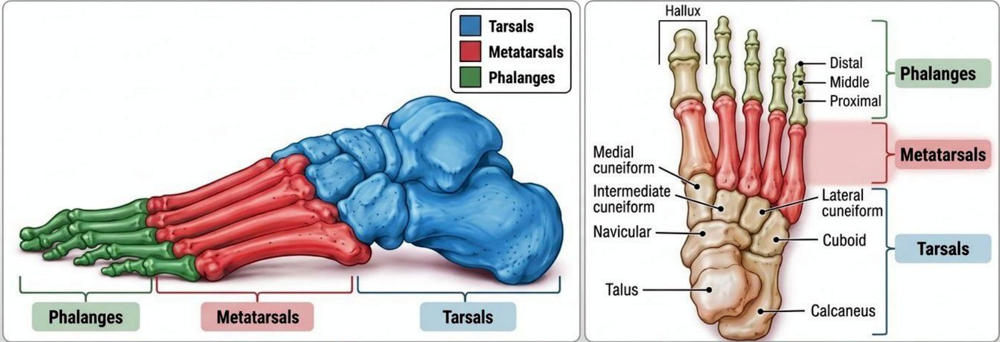
عظام الرصغTarsals
- • A set of seven irregularly shaped bones.مجموعة من سبعة عظام غير منتظمة الشكل.
- • Situated proximally in the foot in the ankle area.تقع في الجزء القريب من القدم، في منطقة الكاحل.
الأمشاطMetatarsals
- • Connect the phalanges to the tarsals.تربط السلاميات بعظام الرصغ.
- • There are five in number – one for each digit.عددها خمسة – واحد لكل إصبع.
السلامياتPhalanges
- • The bones of the toes.عظام أصابع القدم.
- • Each toe has three phalanges – proximal, intermediate, and distal (except the big toe, which only has two phalanges).لكل إصبع ثلاث سلاميات – دانية ومتوسطة وقاصية (عدا الإبهام الذي له سلاميتان فقط).
العظام الرصغيةTarsal Bones
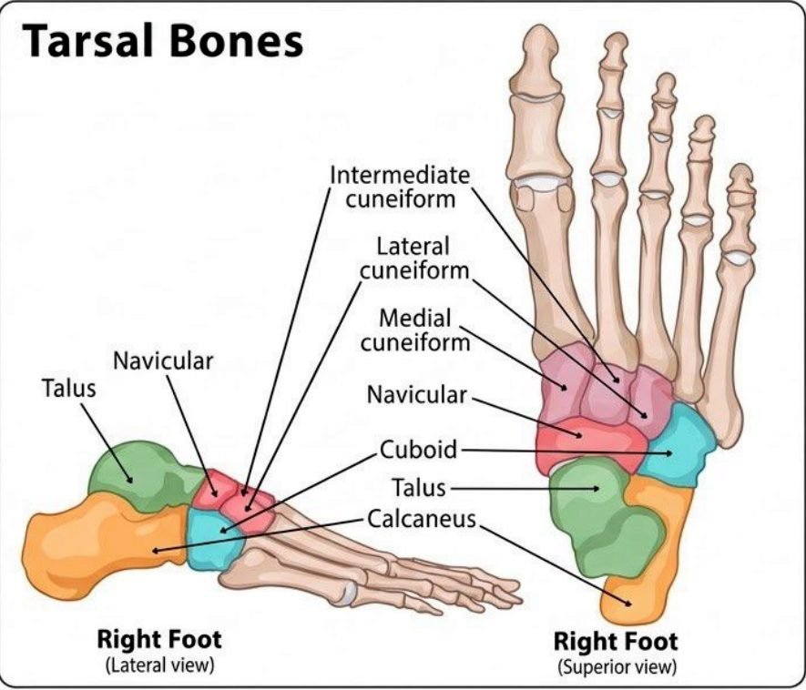
The seven tarsal bones are arranged into three groups:
العظام الرصغية السبعة مرتبة في ثلاث مجموعات:
- • Proximalالقريبة
- • Intermediateالمتوسطة
- • Distalالبعيدة
المجموعة الرصغية القريبةProximal Tarsal Group
- • Consists of two bones: Talus and Calcaneus.تتألف من عظمين: عظم الكاحل وعظم العقب.
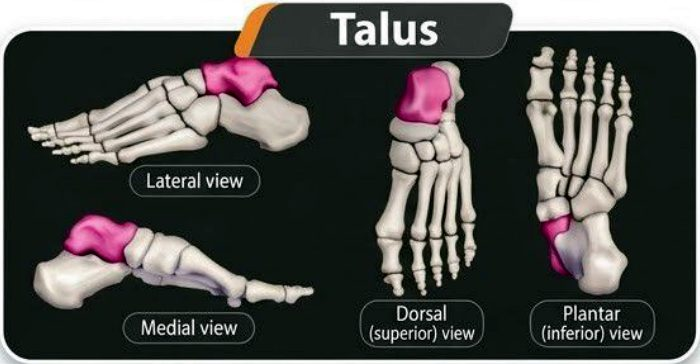
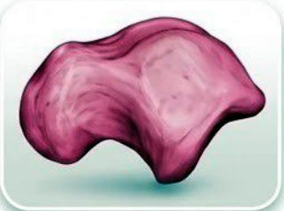
1- عظم الكاحل1. Talus
- • Most superior tarsal bone.أعلى عظم رصغي.
- • Transmits body weight to the foot.ينقل وزن الجسم إلى القدم.
المفاصل (3)Articulations (3):
- • Superior: Ankle joint (Tibia & Fibula)علوياً: مفصل الكاحل (الظنبوب والشظية).
- • Inferior: Subtalar joint (Calcaneus)سفلياً: المفصل تحت الكاحلي (عظم العقب).
- • Anterior: Talonavicular joint (Navicular)أمامياً: المفصل الكاحلي الزورقي (العظم الزورقي).
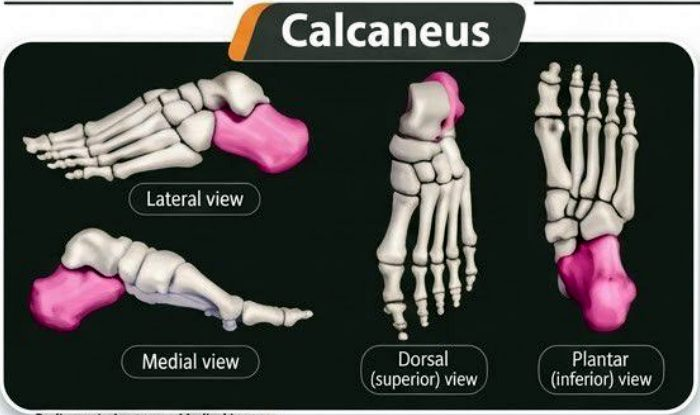
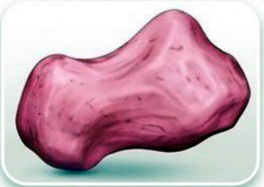
2- عظم العقب2. Calcaneus
- • Largest tarsal bone; forms the heel.أكبر عظم رصغي؛ ويكوّن العقب.
- • Supports body weight during heel strike.يتحمّل وزن الجسم عند ملامسة العقب للأرض.
المفاصل (2)Articulations (2):
- • Superior: Subtalar joint (Talus)علوياً: المفصل تحت الكاحلي (عظم الكاحل).
- • Anterior: Calcaneocuboid joint (Cuboid)أمامياً: المفصل العقبي النردي (العظم النردي).
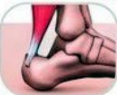
- • Calcaneal tuberosity: Attachment of the Achilles tendon.حدبة العقب: موضع ارتباط وتر العرقوب (وتر أخيل).
شوكة العقبHeel Spur (Calcaneal Spur)
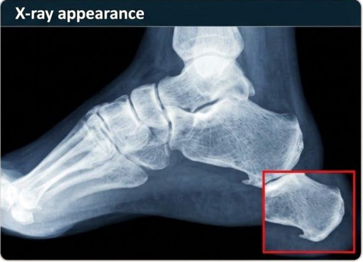
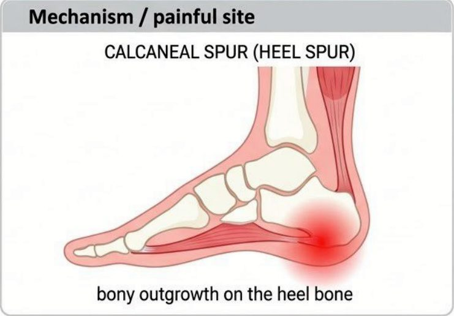
النقاط الرئيسةKey Points
- • Heel spurs (calcaneal spurs) are bony growths on the underside of the heel bone.شوكات العقب نموّات عظمية على الجانب السفلي من عظم العقب.
- • Usually caused by chronic strain or inflammation of the plantar fascia.تنتج عادة عن إجهاد مزمن أو التهاب في اللفافة الأخمصية.
- • They develop due to prolonged stress, poor footwear, obesity, or abnormal foot mechanics.تتكوّن بسبب الإجهاد المطوّل، وسوء الأحذية، والسمنة، أو الميكانيكا غير الطبيعية للقدم.
المجموعتان الرصغيتان المتوسطة والبعيدةIntermediate & Distal Tarsal Groups
المجموعة الرصغية المتوسطةIntermediate Tarsal Group
- • Consists of one bone: Navicular.تتألف من عظم واحد: العظم الزورقي.
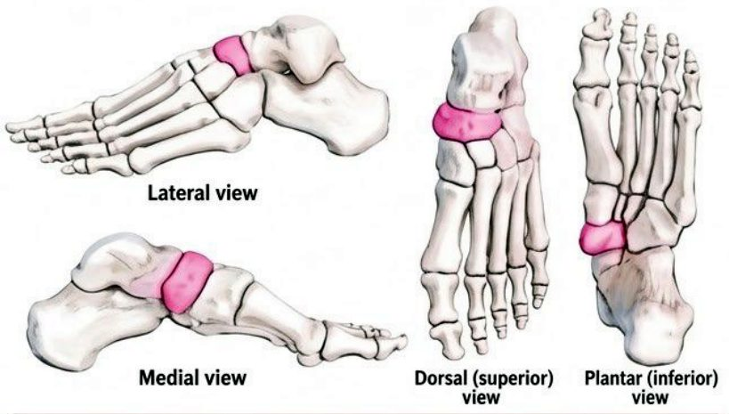
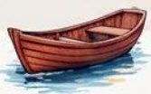
العظم الزورقيNavicular
- • Boat-shaped bone, located medially.عظم على شكل قارب، يقع إنسياً.
- • Articulations (3):المفاصل (3):
- • Posterior: Talusخلفياً: عظم الكاحل
- • Anterior: Three cuneiformsأمامياً: العظام الإسفينية الثلاثة
- • Lateral: Cuboidوحشياً: العظم النردي
- • Navicular tuberosity: Attachment of the tibialis posterior tendon.حدبة الزورقي: موضع ارتباط وتر العضلة الظنبوبية الخلفية.
المجموعة الرصغية البعيدةDistal Tarsal Group
- • Consists of four bones: Cuboid and three Cuneiforms.تتألف من أربعة عظام: العظم النردي وثلاثة عظام إسفينية.
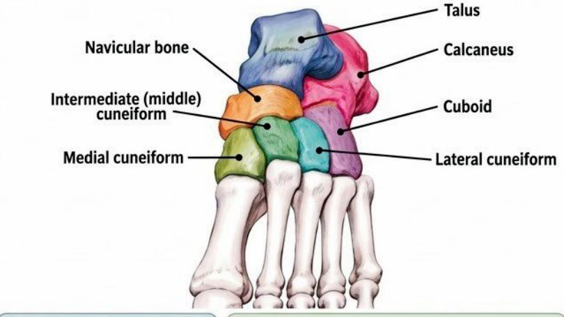
العظم النرديCuboid
- • Most lateral distal tarsal bone.أكثر العظام الرصغية البعيدة وحشيةً.
- • Articulations:المفاصل:
- • Posterior: Calcaneusخلفياً: عظم العقب
- • Anterior: 4th & 5th metatarsalsأمامياً: المشطان الرابع والخامس
- • Plantar groove: For the fibularis longus tendon.الأخدود الأخمصي: لوتر العضلة الشظوية الطويلة.
العظام الإسفينيةCuneiforms
- • Three wedge-shaped bones: Medial, Intermediate, and Lateral.ثلاثة عظام إسفينية الشكل: الإنسي والمتوسط والوحشي.
- • Articulations:المفاصل:
- • Posterior: Navicularخلفياً: العظم الزورقي
- • Anterior: Metatarsalsأمامياً: الأمشاط
- • Function: Help form the transverse arch of the foot.الوظيفة: تساهم في تكوين القوس المستعرض للقدم.
- • Muscle attachments:مواضع ارتباط العضلات:
- • Medial cuneiform: Tibialis anterior, tibialis posterior & fibularis longusالإسفيني الإنسي: العضلة الظنبوبية الأمامية، والعضلة الظنبوبية الخلفية، والعضلة الشظوية الطويلة
- • Lateral cuneiform: Flexor hallucis brevisالإسفيني الوحشي: العضلة القابضة القصيرة لإبهام القدم
الأمشاط والسلامياتMetatarsals & Phalanges
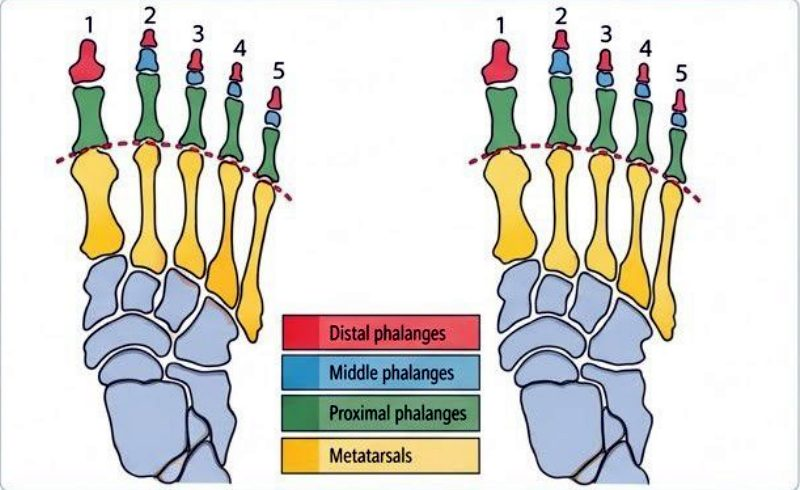
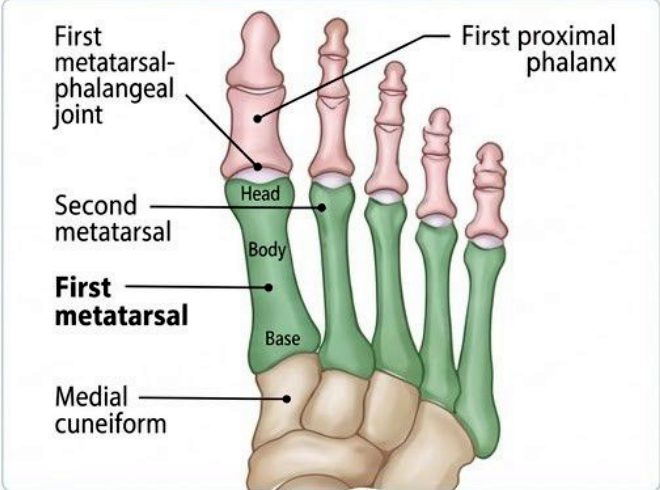
الأمشاطMetatarsals
- • Five bones (I–V) located in the forefoot, between the tarsals and phalangesخمسة عظام (I–V) تقع في مقدم القدم، بين عظام الرصغ والسلاميات
- • Numbered medial to lateral.ترقّم من الإنسي إلى الوحشي.
- • Structure: Base, shaft, neck, and head.البنية: القاعدة، والجسم، والعنق، والرأس.
- • Articulations (3 types):المفاصل (3 أنواع):
- • Proximal: Tarsometatarsal jointsالقريب: المفاصل الرصغية المشطية
- • Lateral: Intermetatarsal jointsالوحشي: المفاصل بين المشطية
- • Distal: Metatarsophalangeal jointsالبعيد: المفاصل المشطية السلامية
السلامياتPhalanges
- • 14 bones forming the toes.14 عظماً تكوّن أصابع القدم.
- • Great toe (Hallux): 2 phalanges (proximal & distal).الإصبع الكبير (الإبهام): سلاميتان (دانية وقاصية).
- • 2nd–5th toes: 3 phalanges each (proximal, middle & distal).الأصابع من الثاني إلى الخامس: ثلاث سلاميات لكل إصبع (دانية ومتوسطة وقاصية).
- • Structure: Base, shaft, and head.البنية: القاعدة، والجسم، والرأس.
أقواس القدمArches of the Foot
- • The foot has two main arches: longitudinal and transverse.للقدم قوسان رئيسان: طولي ومستعرض.
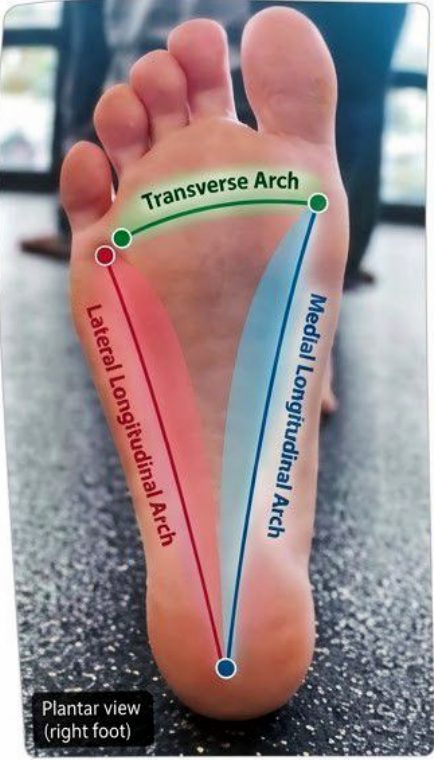
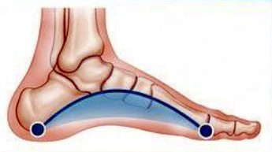
القوس الطولي الإنسيMedial Longitudinal Arch
- • Higher and more prominent.أعلى وأكثر بروزاً.
- • Formed by: Calcaneus, talus, navicular, three cuneiforms, and 1st–3rd metatarsals.يتكوّن من: عظم العقب، وعظم الكاحل، والزورقي، والعظام الإسفينية الثلاثة، والأمشاط من الأول إلى الثالث.
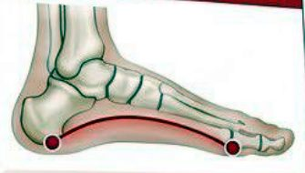
القوس الطولي الوحشيLateral Longitudinal Arch
- • Lower and flatter.أخفض وأكثر تسطحاً.
- • Formed by: Calcaneus, cuboid, and 4th–5th metatarsals.يتكوّن من: عظم العقب، والعظم النردي، والمشطين الرابع والخامس.
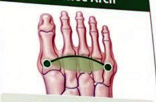
القوس المستعرضTransverse Arch
- • Extends across the distal tarsals and proximal metatarsals.يمتد عبر عظام الرصغ البعيدة والأمشاط القريبة.
- • Most prominent in the midfoot region.الأكثر بروزاً في منطقة منتصف القدم.
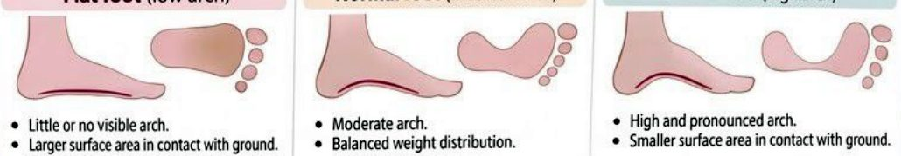
القدم المسطحة (قوس منخفض)Flat foot (low arch)
- • Little or no visible arch.قوس قليل أو غير ظاهر.
- • Larger surface area in contact with ground.مساحة سطح أكبر ملامسة للأرض.
القدم الطبيعية (قوس متوسط)Normal foot (medium arch)
- • Moderate arch.قوس متوسط.
- • Balanced weight distribution.توزيع متوازن للوزن.
القدم المجوّفة (قوس عالٍ)Hollow foet (high arch)
- • High and pronounced arch.قوس عالٍ وبارز.
- • Smaller surface area in contact with ground.مساحة سطح أصغر ملامسة للأرض.
السمات الشعاعية الطبيعية للقدمNormal Radiological Features of the Foot
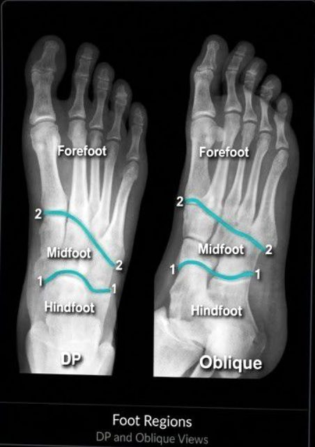
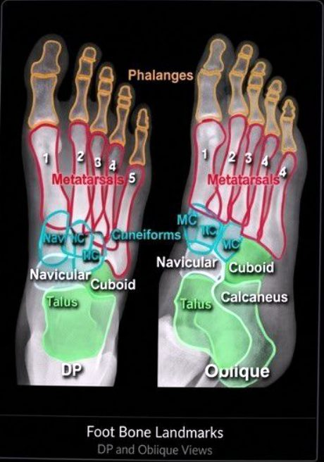
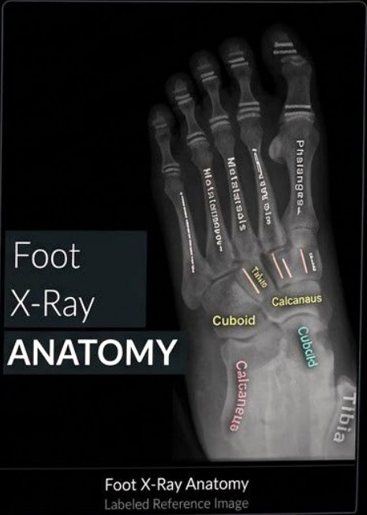
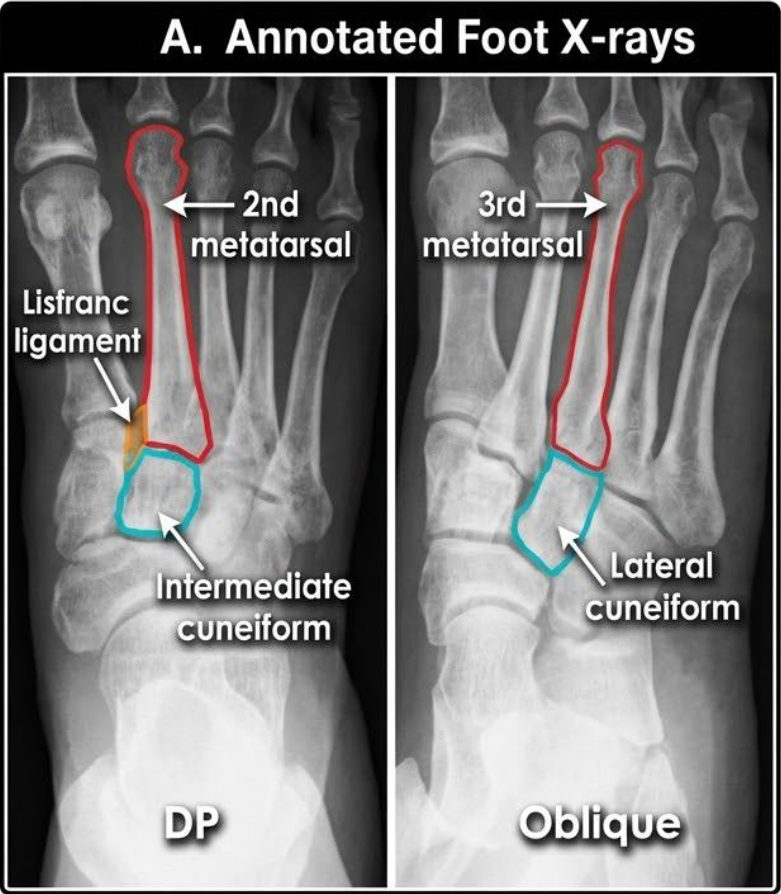
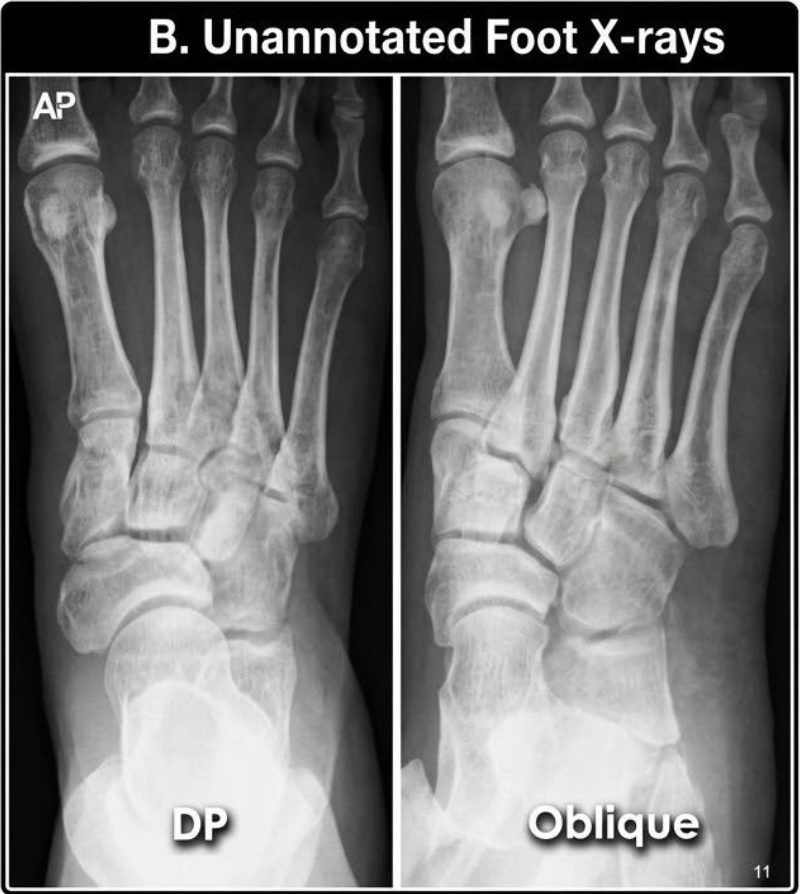
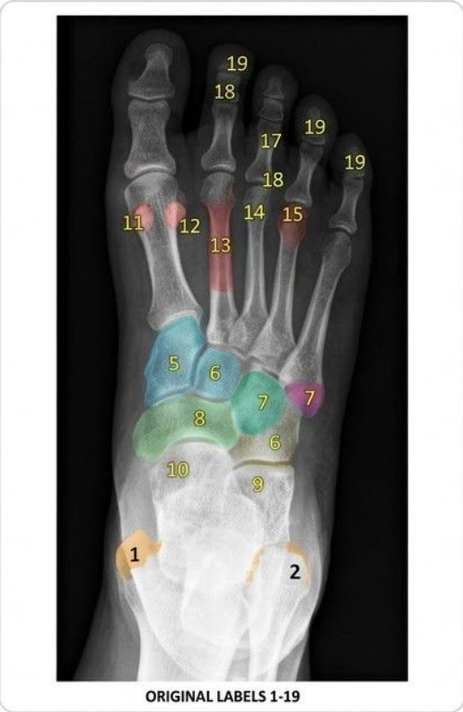
الكاحل ومؤخر القدمANKLE & HINDFOOT
- • Medial malleolusالكعب الإنسي
- • Lateral malleolusالكعب الوحشي
- • Head of talusرأس عظم الكاحل
- • Calcaneusعظم العقب
منتصف القدم والعظام الرصغيةMIDFOOT & TARSAL BONES
- • Navicularالعظم الزورقي
- • Cuboidالعظم النردي
- • Base of fifth metatarsalقاعدة المشط الخامس
- • Third cuneiform (lateral)العظم الإسفيني الثالث (الوحشي)
- • Second cuneiform (intermediate)العظم الإسفيني الثاني (المتوسط)
- • First cuneiform (medial)العظم الإسفيني الأول (الإنسي)
الأمشاط والعظام السمسمانيةMETATARSALS & SESAMOIDS
- • Medial sesamoidالعظم السمسماني الإنسي
- • Lateral sesamoidالعظم السمسماني الوحشي
- • Shaft of second metatarsalجسم المشط الثاني
- • Neck of third metatarsalعنق المشط الثالث
- • Head of fourth metatarsalرأس المشط الرابع
السلاميات والمفاصلPHALANGES & JOINTS
- • Metatarsophalangeal jointالمفصل المشطي السلامي
- • Proximal phalanxالسلامية الدانية
- • Middle phalanxالسلامية المتوسطة
- • Distal phalanxالسلامية القاصية
السمات الشعاعية للقدم: القياساتRadiological Features of the Foot
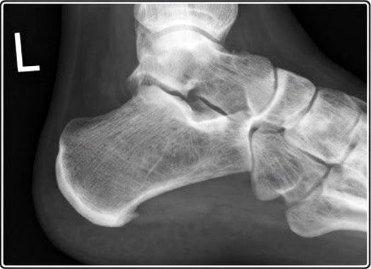
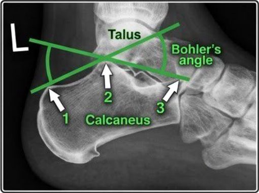
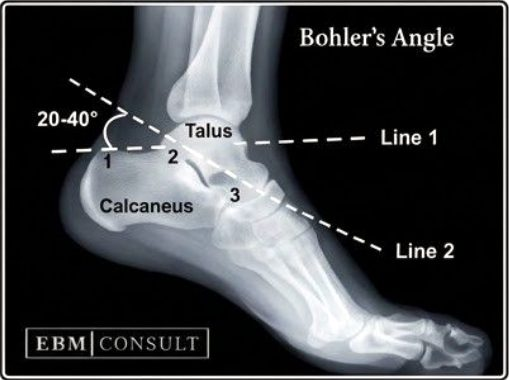
سُمك وسادة العقبHeel Pad Thickness
- • Measured from the calcaneal tuberosity to the skin on a lateral X-ray.يُقاس من حدبة العقب إلى الجلد على صورة شعاعية جانبية.
- • Normal: Females 21 mm, Males 23 mm.الطبيعي: الإناث 21 ملم، الذكور 23 ملم.
- • Increased in: acromegaly and gigantism.يزداد في: ضخامة النهايات والعملقة.
زاوية بولرBöhler’s Angle
- • Measured on a lateral calcaneal X-ray.تُقاس على صورة شعاعية جانبية للعقب.
- • Normal: 30–35° (lecture reference).الطبيعي: 30–35 درجة (مرجع المحاضرة).
- • Below 28°: suggests calcaneal fracture or structural damage.أقل من 28 درجة: توحي بكسر في العقب أو تلف في بنيته.
استقامة عظم الكاحل (الأطفال)Talus Alignment (Children)
- • Over 5 years: talar axis aligns with the 1st metatarsal.فوق 5 سنوات: محور عظم الكاحل يصطف مع المشط الأول.
- • Under 5 years: talus is more vertical, with its axis directed below the 1st metatarsal.دون 5 سنوات: عظم الكاحل أكثر عمودية، ومحوره متجه تحت المشط الأول.
كسور عظم الكاحل وعظم العقبFractures of the Talus and Calcaneus
1- كسر عظم الكاحل1. Talus Fracture
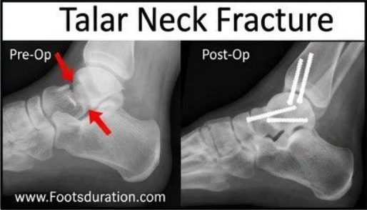
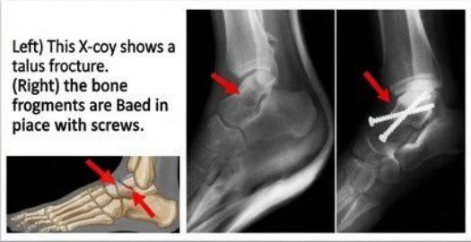
- • Function:الوظيفة:
- • Transmits forces from the leg to the foot.تنقل القوى من الساق إلى القدم.
- • Most common site:الموضع الأشيع:
- • Talar neck (=50%).عنق عظم الكاحل (=50%).
- • Mechanism:الآلية:
- • High-energy forced dorsiflexion.ثني ظهري قسري عالي الطاقة.
- • Major complication:المضاعفة الرئيسة:
- • Avascular necrosis (AVN) due to disrupted blood supply.النخر اللاوعائي (AVN) بسبب انقطاع التروية الدموية.
- • Other fractures:كسور أخرى:
- • Body → fall from height.الجسم ← السقوط من ارتفاع.
- • Head & lateral process → Less common.الرأس والنتوء الوحشي ← أقل شيوعاً.
2- كسر عظم العقب2. Calcaneal Fracture
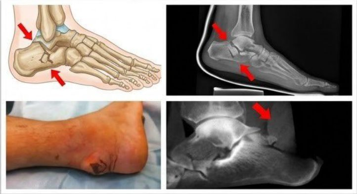
- • Mechanism: Axial loading (fall from height).الآلية: تحميل محوري (السقوط من ارتفاع).
- • Associated Injuries: Lumbar spine and lower limb fractures.الإصابات المصاحبة: كسور في الفقرات القطنية والطرف السفلي.
- • X-ray findings:الموجودات الشعاعية:
- • Shortened and widened calcaneus.عظم عقب مقصّر وموسّع.
- • May be comminuted.قد يكون مفتّتاً.
- • Complications:المضاعفات:
- • Subtalar joint damage → Post-traumatic arthritis.تلف المفصل تحت الكاحلي ← التهاب مفاصل تالٍ للرضح.
- • Pain and difficulty walking on uneven ground.ألم وصعوبة في المشي على أرض غير مستوية.
- • Possible calcaneocuboid joint involvement.احتمال إصابة المفصل العقبي النردي.
كسور عظام المشطMetatarsal Fractures
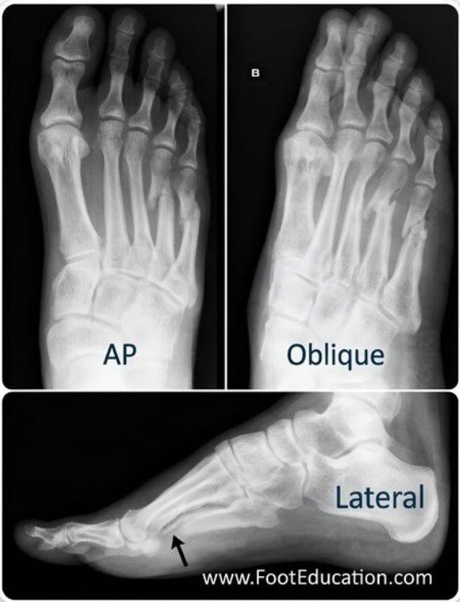
آليات الإصابة الرئيسةMain Mechanisms of Injury
1) ضربة مباشرة1) Direct Blow
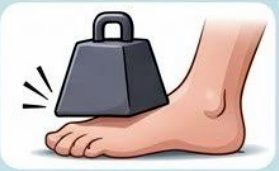
- • Most common mechanism.الآلية الأشيع.
- • Caused by a heavy object falling on the foot.تنتج عن سقوط جسم ثقيل على القدم.
2) كسر الإجهاد2) Stress Fracture
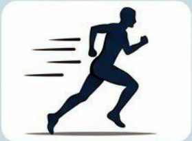
- • Incomplete fracture due to repetitive stress.كسر غير كامل بسبب الإجهاد المتكرر.
- • Common in athletes.شائع عند الرياضيين.
- • Common sites:المواضع الشائعة:
- • Neck of 2nd & 3rd metatarsals.عنق المشطين الثاني والثالث.
- • Proximal 5th metatarsal.الجزء القريب من المشط الخامس.
3) إصابة انقلاب القدم3) Inversion Injury
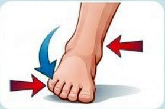
- • Forceful inward twisting of the foot.التواء قسري للقدم نحو الداخل.
- • Fibularis brevis tendon may avulse the base of the 5th metatarsal.قد يقتلع وتر العضلة الشظوية القصيرة قاعدة المشط الخامس.
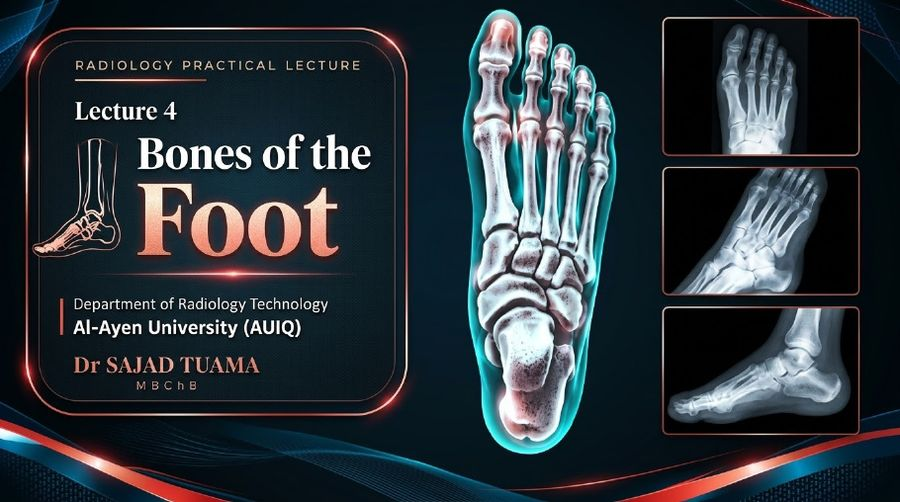
الترجمة العربية
RADIOLOGY PRACTICAL LECTURE
Lecture 4
Bones of the
Foot
Department of Radiology Technology
MB ChB
محاضرة عملية في الأشعة
المحاضرة الرابعة
عظام القدم
قسم تقنيات الأشعة
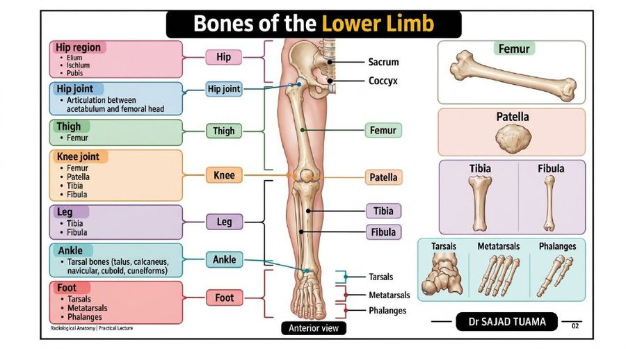
الترجمة العربية
Hip region
• Elium
• Ischlum
• Pubis
Hip joint
• Articulation between
acetabulum and femoral head
Thigh
• Femur
Knee joint
• Femur
• Patella
• Tibia
• Fibula
Leg
• Tibia
• Fibula
Ankle
• Tarsal bones (talus, calcaneus,
navicular, cubold, cunelforms)
Foot
• Tarsals
• Metatarsals
• Phalanges
Radiological Anatomy| Practical Lecture
Bones of the Lower Limb
Hip
Hip joint
- Sacrum
- Соссух
Thigh
Femur
Knee
Patella
Tibia
Fibula
Leg
Ankle
Foot
Tarsals
- Tarsals
- Metatarsals
- Phalanges
Anterior view
Femur
Patella
Tibia
Fibula
Metatarsals
Phalanges
02
عظام الطرف السفلي
منطقة الورك
• الحرقفة
• الإسك
• العانة
مفصل الورك
• التمفصل بين الحُقّ ورأس عظم الفخذ
الفخذ
• عظم الفخذ
مفصل الركبة
• عظم الفخذ
• الرضفة
• الظنبوب
• الشظية
الساق
• الظنبوب
• الشظية
الكاحل
• عظام الرصغ (الكاحل، العقب، الزورقي، النردي، الإسفينية)
القدم
• عظام الرصغ
• عظام المشط
• السلاميات
منظر أمامي: عظم الفخذ؛ الرضفة؛ الظنبوب؛ الشظية؛ عظام المشط؛ السلاميات؛ العجز؛ العصعص.
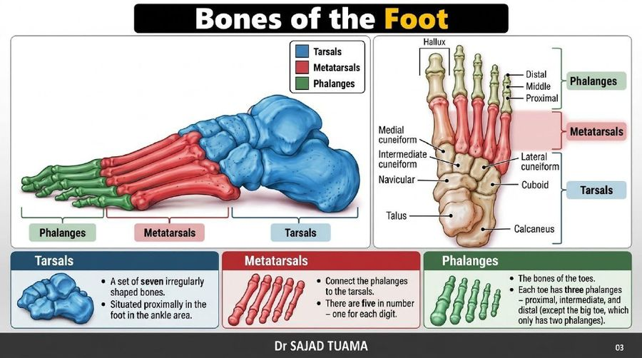
الترجمة العربية
Bones of the Foot
Hallux
Tarsals
Metatarsals
Phalanges
- Distal
Middle
Proximal
- Phalanges
Medial
cuneiform
Intermediate
cuneiform
Navicular
Metatarsals
. Lateral
cuneiform
- Cuboid
Tarsals
Talus-
Phalanges
Tarsals
Metatarsals
Tarsals
Metatarsals
Calcaneus
Phalanges
• A set of seven irregularly
shaped bones.
• Situated proximally in the
foot in the ankle area.
• Connect the phalanges
to the tarsals.
• There are five in number
- one for each digit.
Dr SAJAD TUAMA
•The bones of the toes.
• Each toe has three phalanges
- proximal, intermediate, and
distal (except the big toe, which
only has two phalanges).
03
عظام القدم
إبهام القدم
عظام الرصغ
عظام المشط
السلاميات: القاصية، المتوسطة، الدانية
العظم الإسفيني الإنسي؛ العظم الإسفيني المتوسط؛ العظم الزورقي؛ العظم الإسفيني الوحشي؛ العظم النردي؛ عظم الكاحل؛ عظم العقب.
عظام الرصغ
• مجموعة من سبعة عظام غير منتظمة الشكل.
• تقع في الجزء الداني من القدم عند منطقة الكاحل.
عظام المشط
• تصل بين السلاميات وعظام الرصغ.
• عددها خمسة، واحد لكل إصبع.
السلاميات
• عظام أصابع القدم.
• لكل إصبع ثلاث سلاميات: دانية ومتوسطة وقاصية (عدا الإبهام الذي له سلاميتان فقط).

الترجمة العربية
Tarsal Bones
Tarsal Bones
The seven tarsal bones are
arranged into three groups:
• Proximal
• Intermediate
• Distal
Navicular
Talus
Intermediate
cuneiform
Lateral
cuneiform
Medial
cuneiform
Navicular
Cuboid-
Talus-
Calcaneus
o cal anstomPrattal Leaure
Right Foot
(Lateral view)
Dr SAJAD TUAMA
Right Foot
(Superior view)
عظام الرصغ
تُرتَّب عظام الرصغ السبعة في ثلاث مجموعات:
• الدانية
• المتوسطة
• القاصية
العظم الزورقي؛ عظم الكاحل؛ العظم الإسفيني المتوسط؛ العظم الإسفيني الوحشي؛ العظم الإسفيني الإنسي؛ العظم النردي؛ عظم العقب.
القدم اليمنى (منظر جانبي)
القدم اليمنى (منظر علوي)
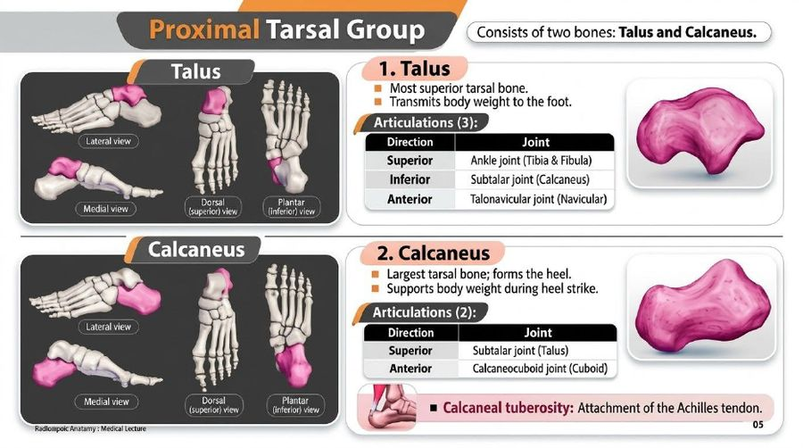
الترجمة العربية
Lateral view
Medial view
Lateral view
Medial view
Proximal Tarsal Group
Talus
Plantar
(inferior) view
1. Talus
Most superior tarsal bone.
Transmits body weight to the foot.
Articulations (3):
Direction
Superior
Inferior
Anterior
Joint
Ankle joint (Tibia & Fibula)
Subtalar joint (Calcaneus)
Talonavicular joint (Navicular)
Consists of two bones: Talus and Calcaneus.
Dorsal
(superior) view
Calcaneus
2. Calcaneus
• Largest tarsal bone; forms the heel.
Supports body weight during heel strike.
Articulations (2):
Direction
Superior
Anterior
Dorsal
(superior) view
Plantar
(inferior) view
Joint
Subtalar joint (Talus)
Calcaneocuboid joint (Cuboid)
• Calcaneal tuberosity: Attachment of the Achilles tendon.
05
منظر وحشي
منظر إنسي
مجموعة الرصغ الدانية
عظم الكاحل
منظر أخمصي (سفلي)
1. عظم الكاحل
• أعلى عظام الرصغ.
• ينقل وزن الجسم إلى القدم.
التمفصلات (3):
الاتجاه: علوي؛ سفلي؛ أمامي
المفصل: مفصل الكاحل (الظنبوب والشظية)؛ المفصل تحت الكاحلي (العقب)؛ المفصل الكاحلي الزورقي (الزورقي)
تتكوّن من عظمين: عظم الكاحل وعظم العقب.
منظر ظهري (علوي)
عظم العقب
2. عظم العقب
• أكبر عظام الرصغ؛ ويكوّن الكعب.
• يدعم وزن الجسم عند ضربة الكعب.
التمفصلات (2):
الاتجاه: علوي؛ أمامي
المفصل: المفصل تحت الكاحلي (عظم الكاحل)؛ المفصل العقبي النردي (النردي)
• حدبة العقب: موضع ارتباط وتر العقب (وتر أخيل).
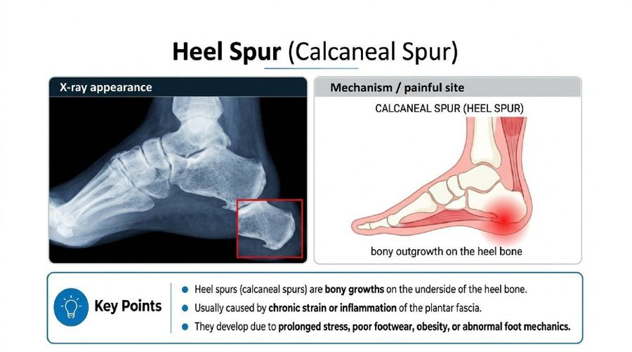
الترجمة العربية
X-ray appearance
Heel Spur (Calcaneal Spur)
Mechanism / painful site
CALCANEAL SPUR (HEEL SPUR)
Key Points
bony outgrowth on the heel bone
• Heel spurs (calcaneal spurs) are bony growths on the underside of the heel bone.
• Usually caused by chronic strain or inflammation of the plantar fascia.
• They develop due to prolonged stress, poor footwear, obesity, or abnormal foot mechanics.
مظهر الأشعة السينية
شوكة العقب
آلية الإصابة / موضع الألم
شوكة العقب
نقاط رئيسة
نتوء عظمي على عظم العقب
• شوكة العقب هي نموّات عظمية على الجهة السفلية لعظم العقب.
• تحدث عادةً بسبب الإجهاد المزمن أو التهاب اللفافة الأخمصية.
• تنشأ بسبب الإجهاد المطوّل وسوء الأحذية والسمنة أو الميكانيكا غير الطبيعية للقدم.

الترجمة العربية
Intermediate & Distal Tarsal Groups
Intermediate Tarsal Group
Distal Tarsal Group
• Consists of one bone: Navicular.
•Consists of four bones: Cuboid and three Cuneiforms.
Navicular bone
Talus
Calcaneus
Lateral view
Intermediate (middle)
cuneiform
Medial cuneiform -
Cuboid
• Lateral cuneiform
Medial view
Dorsal (superior)
view
Plantar (inferior)
view
Navicular
• Boat-shaped bone, located medially.
• Articulations (3):
- Posterior: Talus
- Anterior: Three cuneiforms
- Lateral: Cuboid
• Navicular tuberosity: Attachment of the tibialis posterior tendon.
Cuboid
• Most lateral distal tarsal bone.
• Articulations:
- Posterior: Calcaneus
- Anterior: 4* & 5° metatarsals
• Plantar groove: For the fibularis
longus tendon.
Dr. SAJAD TUAMA
Cuneiforms
• Three wedge-shaped bones: Medial, Intermediate,
and Lateral.
• Articulations:
- Posterior: Navicular
- Anterior: Metatarsals
•Function: Help form the transverse arch of the toot
• Muscle attachments
- Medial cuneiform: Tibialis anterior, tibialis posterior & fibularis longus
- Lateral cuneiform: Flexor hallucis brevis
07
مجموعتا الرصغ المتوسطة والقاصية
مجموعة الرصغ المتوسطة
مجموعة الرصغ القاصية
• تتكوّن من عظم واحد: العظم الزورقي.
• تتكوّن من أربعة عظام: العظم النردي والعظام الإسفينية الثلاثة.
العظم الزورقي؛ عظم الكاحل؛ عظم العقب؛ منظر جانبي؛ العظم الإسفيني المتوسط؛ العظم الإسفيني الإنسي؛ العظم النردي؛ العظم الإسفيني الوحشي؛ منظر إنسي؛ منظر ظهري (علوي)؛ منظر أخمصي (سفلي).
العظم الزورقي
• عظم على شكل قارب، يقع في الجهة الإنسية.
• التمفصلات (3):
– الخلفي: عظم الكاحل
– الأمامي: العظام الإسفينية الثلاثة
– الوحشي: العظم النردي
• حدبة العظم الزورقي: موضع ارتباط وتر الظنبوبي الخلفي.
العظم النردي
• أكثر عظام الرصغ القاصية وحشيةً.
• التمفصلات:
– الخلفي: عظم العقب
– الأمامي: المشطان الرابع والخامس
• الأخدود الأخمصي: لمرور وتر الشظوي الطويل.
العظام الإسفينية
• ثلاثة عظام على شكل إسفين: الإنسي والمتوسط والوحشي.
• التمفصلات:
– الخلفي: العظم الزورقي
– الأمامي: عظام المشط
• الوظيفة: تساعد في تكوين القوس المستعرض للقدم.
• ارتباطات العضلات:
– العظم الإسفيني الإنسي: الظنبوبية الأمامية والظنبوبية الخلفية والشظوية الطويلة
– العظم الإسفيني الوحشي: العضلة المثنية القصيرة للإبهام

الترجمة العربية
Metatarsals & Phalanges
First
metatarsal-
phalangeal
Joint
First proximal
phalanx
Second
metatarsal
First
metatarsal
Head
Body
Distal phalanges
Middle phalanges
Proximal phalanges
Metatarsals
Base
Medial
cuneiform
Metatarsals
• Five bones (I-V) located in the forefoot, between
the tarsals and phalanges.
• Numbered medial to lateral.
• Structure: Base, shaft, neck, and head.
• Articulations (3 types):
- Proximal: Tarsometatarsal joints
- Lateral: Intermetatarsal joints
- Distal: Metatarsophalangeal joints
Phalanges
• 14 bones forming the toes.
• Great toe (Hallux): 2 phalanges
(proximal & distal).
• 2nd-5th toes: 3 phalanges each
(proximal, middle & distal).
• Structure: Base, shaft, and head.
Metatarsal Articulations
Direction
Proximal
Lateral
Distal
Joint
Tarsometatarsal joints
Intermetatarsal joints
Metatarsophalangeal joints
08
عظام المشط والسلاميات
المفصل المشطي السلامي الأول؛ السلامية الدانية الأولى؛ المشط الثاني؛ المشط الأول؛ الرأس؛ الجسم؛ السلاميات القاصية؛ السلاميات المتوسطة؛ السلاميات الدانية؛ عظام المشط؛ القاعدة؛ العظم الإسفيني الإنسي.
عظام المشط
• خمسة عظام (I–V) تقع في مقدّم القدم بين عظام الرصغ والسلاميات.
• تُرقَّم من الإنسي إلى الوحشي.
• البنية: القاعدة والجسم والعنق والرأس.
• التمفصلات (3 أنواع):
– الدانية: المفاصل الرصغية المشطية
– الوحشية: المفاصل بين المشطية
– القاصية: المفاصل المشطية السلامية
السلاميات
• 14 عظماً تكوّن أصابع القدم.
• إبهام القدم: سلاميتان (دانية وقاصية).
• الأصابع من الثاني إلى الخامس: ثلاث سلاميات لكل إصبع (دانية ومتوسطة وقاصية).
• البنية: القاعدة والجسم والرأس.
تمفصلات عظام المشط
الاتجاه: دانٍ؛ وحشي؛ قاصٍ
المفصل: المفاصل الرصغية المشطية؛ المفاصل بين المشطية؛ المفاصل المشطية السلامية
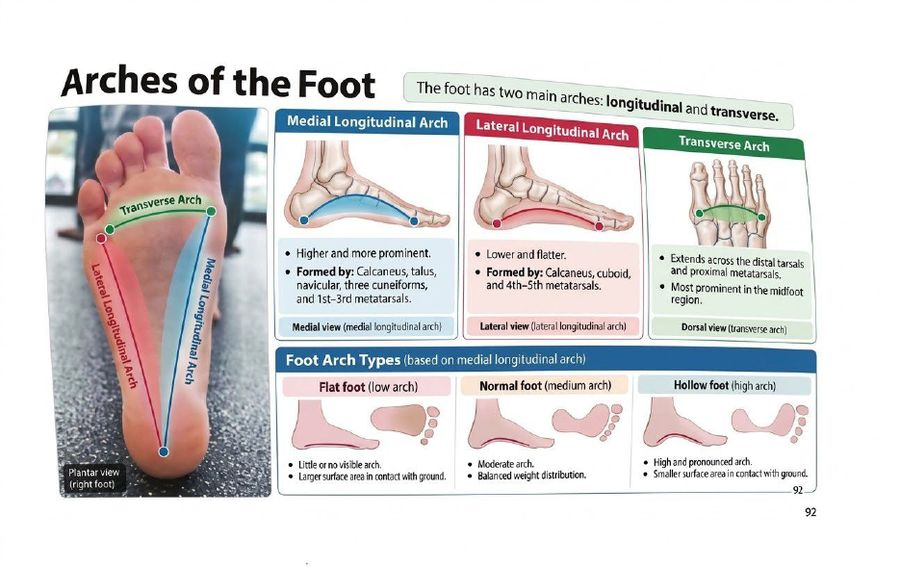
الترجمة العربية
Arches of the Foot
Medial Longitudinal Arch
The foot has two main arches: longitudinal and transverse.
Lateral Longitudinal Arch
Transverse Arch
Transverse Arch
••
Lateral Longitudinal Arch
Medial Longitudinal Arch
• Higher and more prominent.
• Formed by: Calcaneus, talus,
navicular, three cuneiforms,
and 1st-3rd metatarsals.
Medial view (medial longitudinal arch)
• Lower and flatter.
• Formed by: Calcaneus, cuboid,
and 4th-Sth metatarsals.
Lateral view (lateral longitudinal arch)
Foot Arch Types (based on medial longitudinal arch)
Flat foot (low arch)
Normal foot (medium arch)
• Extends across the distal tarsals
and proximal metatarsals.
• Most prominent in the midfoot
region.
Dorsal view (transverse arch)
Hollow foot (high arch)
Plantar view
(right foot)
• Little or no visible arch.
• Larger surface area in contact with ground.
• Moderate arch
• Balanced weight distribution.
• High and pronounced arch
• Smaller surface area in contact with ground.
92.
92
أقواس القدم
القوس الطولي الإنسي
للقدم قوسان رئيسان: طولي ومستعرض.
القوس الطولي الوحشي
القوس المستعرض
القوس الطولي الإنسي
• أعلى وأكثر بروزاً.
• يتكوّن من: عظم العقب وعظم الكاحل والزورقي والعظام الإسفينية الثلاثة والمشطيات من الأول إلى الثالث.
منظر إنسي (القوس الطولي الإنسي)
القوس الطولي الوحشي
• أخفض وأكثر استواءً.
• يتكوّن من: عظم العقب والنردي والمشطيين الرابع والخامس.
منظر وحشي (القوس الطولي الوحشي)
القوس المستعرض
• يمتد عبر العظام القاصية من الرصغ والجزء الداني من عظام المشط.
• أكثر بروزاً في منطقة منتصف القدم.
منظر ظهري (القوس المستعرض)
أنواع أقواس القدم (بحسب القوس الطولي الإنسي)
القدم المسطّحة (قوس منخفض)
• قوس قليل أو غير ظاهر.
• مساحة ملامسة أكبر مع الأرض.
القدم الطبيعية (قوس متوسط)
• قوس معتدل.
• توزيع متوازن للوزن.
القدم المجوّفة (قوس مرتفع)
• قوس عالٍ وبارز.
• مساحة ملامسة أصغر مع الأرض.
منظر أخمصي (القدم اليمنى)
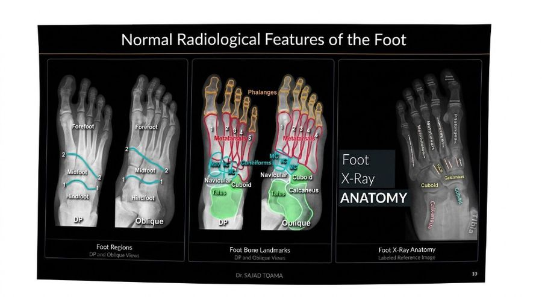
الترجمة العربية
Normal Radiological Features of the Foot
Phalanges
Forefoot
Forefoot
Midfoot
Hindfoot
DP
nidfoot
Hinatoot
Oblique
Foot Regions
DP and Oblique Views
1S 5
MC
Cuneiforms
Navicular
Cuboid
Navicula Cuboid
Talus
calcaneus
Taius
DP
Optiqué
Foot Bone Landmarks
DP and Oblique Views
Dr. SAJAD TOAMA
VEVE 010
Foot
X-Ray
ANATOMY
Cuboid
Foot X-Ray Anatomy
Labeled Reference Image
natongeo-
10
المظاهر الشعاعية الطبيعية للقدم
مناطق القدم: مقدّم القدم (السلاميات)؛ منتصف القدم؛ مؤخّر القدم
الإسقاطان الظهري الأخمصي (DP) والمائل
معالم عظام القدم
الإسقاطان الظهري الأخمصي والمائل
العظام الإسفينية؛ الزورقي؛ النردي؛ عظم الكاحل؛ عظم العقب؛ المشط (MC)
تشريح الأشعة السينية للقدم
صورة مرجعية موسومة

الترجمة العربية
A. Annotated Foot X-rays
B. Unannotated Foot X-rays
AP
- 2nd
metatarsal
3rd -
metatarsal
Lisfranc
ligament
Intermediate
cuneiform
Lateral
cuneiform
DP
Oblique
DP
Oblique
أ. صور شعاعية موسومة للقدم
ب. صور شعاعية غير موسومة للقدم
إسقاط AP
المشط الثاني؛ المشط الثالث؛ رباط ليسفرانك؛ العظم الإسفيني المتوسط؛ العظم الإسفيني الوحشي
إسقاط ظهري أخمصي (DP)
إسقاط مائل
إسقاط ظهري أخمصي (DP)
إسقاط مائل

الترجمة العربية
Normal Foot X-Ray Anatomy
19
18
19
17
18
14
15
19
13
i ANKLE & HINDFOOT
1 Medial malleolus
Lateral malleolus
Head of talus
Calcaneus
i MIDFOOT & TARSAL BONES
Navicular
Cuboid
Base of fifth metatarsal
Third cuneiform (lateral)
) Second cuneiform (intermediate)
First cuneiform (medial)
2
ORIGINAL LABELS 1-19
© DR. SAJAD AL-RAWI
DP VIEW
i METATARSALS & SESAMOIDS
Medial sesamoid
Lateral sesamoid
Shaft of second metatarsal
14
Neck of third metatarsal
15
Head of fourth metatarsal
¡ PHALANGES & JOINTS
16
Metatarsophalangeal joint
Proximal phalanx
Middle phalanx
Distal phalanx
PAGE 12
تشريح الأشعة السينية الطبيعي للقدم
الإسقاط الظهري الأخمصي (DP)
الكاحل ومؤخّر القدم: الكعب الإنسي؛ الكعب الوحشي؛ رأس عظم الكاحل؛ عظم العقب.
منتصف القدم وعظام الرصغ: الزورقي؛ النردي؛ قاعدة المشط الخامس؛ العظم الإسفيني الثالث (الوحشي)؛ العظم الإسفيني الثاني (المتوسط)؛ العظم الإسفيني الأول (الإنسي).
عظام المشط والسمسمانيات: العظم السمسماني الإنسي؛ العظم السمسماني الوحشي؛ جسم المشط الثاني؛ عنق المشط الثالث؛ رأس المشط الرابع.
السلاميات والمفاصل: المفصل المشطي السلامي؛ السلامية الدانية؛ السلامية المتوسطة؛ السلامية القاصية.
التسميات الأصلية 1–19

الترجمة العربية
Radiological Features of the Foot
Bohler's Angle
L
Talus
Bohler's
angle
20-40°
--
Talus
- - Line 1
2
Calcaneus
Calcaneus
Line 2
EBM|CONSULT
Heel Pad Thickness
• Measured from the calcaneal tuberosity
to the skin on a lateral X-ray.
• Normal: Females 21 mm, Males 23 mm.
• Increased in: acromegaly and gigantism.
Böhler's Angle
• Measured on a lateral calcaneal X-ray.
• Normal: 30-35° (lecture reference).
• Below 28°: suggests calcaneal fracture or structural damage.
Talus Alignment
(Children)
• Over 5 years: talar axis aligns with the 1st metatarsal.
• Under 5 years: talus is more vertical, with its axis directed below the 1st metatarsal.
Dr SAJAD TUAMA
43
المظاهر الشعاعية للقدم
زاوية بولر
عظم الكاحل؛ زاوية بولر 20–40°؛ الخط 1؛ الخط 2؛ عظم العقب
سماكة وسادة الكعب
• تُقاس من حدبة العقب إلى الجلد على صورة شعاعية جانبية.
• الطبيعي: 21 ملم للإناث، 23 ملم للذكور.
• تزداد في: ضخامة النهايات (الأكروميغالي) والعملقة.
زاوية بولر
• تُقاس على صورة شعاعية جانبية للعقب.
• الطبيعي: 30–35° (بحسب مرجع المحاضرة).
• أقل من 28°: توحي بكسر في العقب أو تلف في بنيته.
محاذاة عظم الكاحل (الأطفال)
• بعد عمر 5 سنوات: يتوازى محور عظم الكاحل مع المشط الأول.
• قبل عمر 5 سنوات: يكون عظم الكاحل أكثر عمودية، ويتجه محوره إلى ما دون المشط الأول.
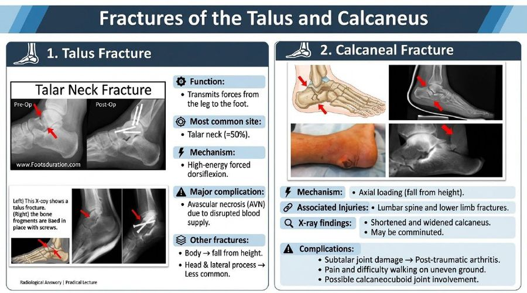
الترجمة العربية
1. Talus Fracture
Fractures of the Talus and Calcaneus
2. Calcaneal Fracture
Pre-Op
Talar Neck Fracture
Post-Op
www.Footsduration.com
Left) This X-coy shows a
talus frocture.
(Right) the bone
frogments are Baed in
place with screws.
• Function:
• Transmits forces from
the leg to the foot.
Most common site:
• Talar neck (=50%).
4 Mechanism:
• High-energy forced
dorsiflexion.
A Major complication:
• Avascular necrosis (AVN)
due to disrupted blood
supply.
Other fractures:
• Body → fall from height.
• Head & lateral process →
Less common.
Radiological Answory | Pradical Lecture
4 Mechanism:
• Axial loading (fall from height).
@ Associated Injuries: • Lumbar spine and lower limb fractures.
Q X-ray findings:
• Shortened and widened calcaneus.
• May be comminuted.
A Complications:
• Subtalar joint damage → Post-traumatic arthritis.
• Pain and difficulty walking on uneven ground.
• Possible calcaneocuboid joint involvement.
1. كسر عظم الكاحل
كسور عظم الكاحل وعظم العقب
2. كسر عظم العقب
قبل العملية
كسر عنق عظم الكاحل
بعد العملية
يُظهر الجانب الأيسر كسراً في عظم الكاحل، وفي الجانب الأيمن تُثبَّت القطع العظمية بالبراغي.
كسر عظم الكاحل
• الوظيفة: ينقل القوى من الساق إلى القدم.
• أكثر المواضع شيوعاً: عنق عظم الكاحل (≈50%).
• الآلية: ثني ظهري قسري عالي الطاقة.
• المضاعفة الكبرى: النخر اللاوعائي بسبب انقطاع التروية الدموية.
• كسور أخرى: الجسم ← السقوط من ارتفاع؛ الرأس والنتوء الوحشي ← أقل شيوعاً.
كسر عظم العقب
• الآلية: تحميل محوري (السقوط من ارتفاع).
• إصابات مرافقة: كسور في العمود الفقري القطني والطرف السفلي.
• الموجودات الشعاعية: عظم عقب مقصّر وعريض؛ وقد يكون مفتّتاً.
• المضاعفات: تلف المفصل تحت الكاحلي ← التهاب مفصل تالٍ للرضح؛ ألم وصعوبة في المشي على الأرض غير المستوية؛ احتمال إصابة المفصل العقبي النردي.
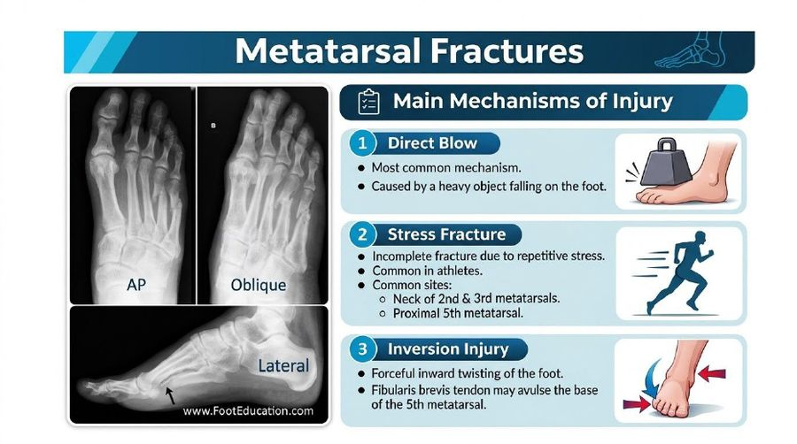
الترجمة العربية
Metatarsal Fractures
Main Mechanisms of Injury
1
) Direct Blow
• Most common mechanism.
• Caused by a heavy object falling on the foot.
AР
Oblique
Lateral
www.FootEducation.com
Stress Fracture
• Incomplete fracture due to repetitive stress.
• Common in athletes.
• Common sites:
• Neck of 2nd & 3rd metatarsals.
• Proximal 5th metatarsal.
3) Inversion Injury
• Forceful inwardtwisting of the foot.
• Fibularis brevis tendon may avulse the base
of the 5th metatarsal.
كسور عظام المشط
الآليات الرئيسة للإصابة
1) الضربة المباشرة
• أشيع الآليات.
• تحدث بسقوط جسم ثقيل على القدم.
إسقاط AP؛ مائل؛ جانبي
2) كسر الإجهاد
• كسر غير تام ناتج عن إجهاد متكرر.
• شائع عند الرياضيين.
• المواضع الشائعة:
• عنق المشطين الثاني والثالث.
• الجزء الداني من المشط الخامس.
3) إصابة الانقلاب
• التواء قسري للقدم نحو الداخل.
• قد يقتلع وتر الشظوي القصير قاعدة المشط الخامس.


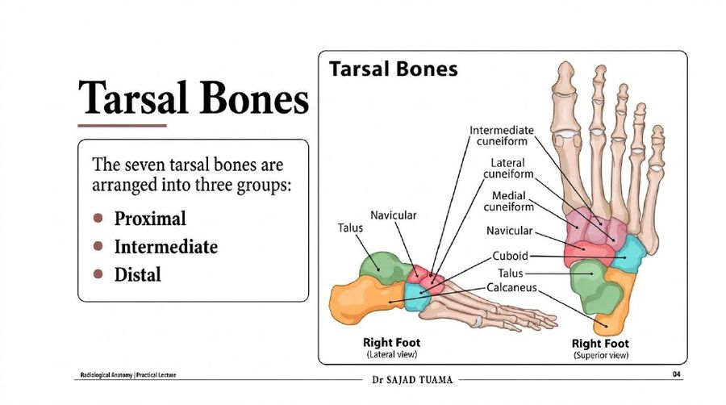


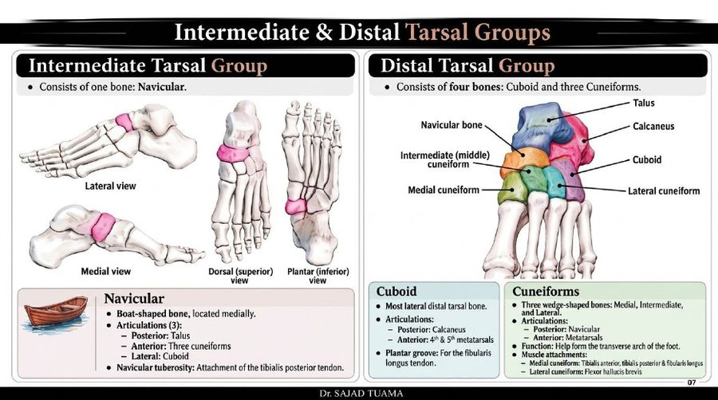
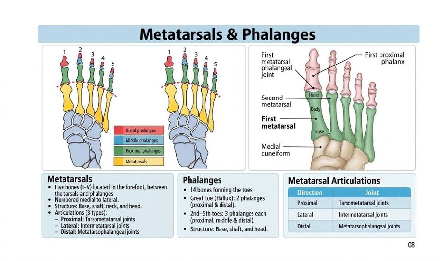


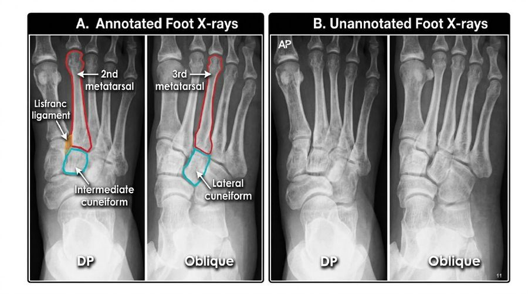


المحاضرة مسموعة
نص الأستاذ بالإنكليزي مثل الأصل · 8.9 دقيقة. اضغط أي جملة تسمعها، أو مصطلح منقّط تسمع لفظه ومعناه.
Bones of the Lower Limbعظام الطرف السفلي
Bones of the Lower Limb
Hip region
Elium
Ischlum
Pubis
Hip joint
Articulation between acetabulum and femoral head
Thigh
Femur
Knee joint
Femur
Patella
Tibia
Fibula
Leg
Tibia
Fibula
Ankle
Tarsal bones (talus, calcaneus, navicular, cubold, cunelforms)
Foot
Tarsals
Metatarsals
Phalanges
Bones of the Footعظام القدم: نظرة عامة
Bones of the Foot
Tarsals
A set of seven irregularly shaped bones.
Situated proximally in the foot in the ankle area.
Metatarsals
Connect the phalanges to the tarsals.
There are five in number – one for each digit.
Phalanges
The bones of the toes.
Each toe has three phalanges – proximal, intermediate, and distal (except the big toe, which only has two phalanges).
Tarsal Bonesالعظام الرصغية
Tarsal Bones
The seven tarsal bones are arranged into three groups:
Proximal
Intermediate
Distal
Proximal Tarsal Groupالمجموعة الرصغية القريبة
Proximal Tarsal Group
Consists of two bones: Talus and Calcaneus.
1. Talus
Most superior tarsal bone.
Transmits body weight to the foot.
Articulations (3):
Superior: Ankle joint (Tibia & Fibula)
Inferior: Subtalar joint (Calcaneus)
Anterior: Talonavicular joint (Navicular)
2. Calcaneus
Largest tarsal bone; forms the heel.
Supports body weight during heel strike.
Articulations (2):
Superior: Subtalar joint (Talus)
Anterior: Calcaneocuboid joint (Cuboid)
Calcaneal tuberosity: Attachment of the Achilles tendon.
Heel Spur (Calcaneal Spur)شوكة العقب
Heel Spur (Calcaneal Spur)
Key Points
Heel spurs (calcaneal spurs) are bony growths on the underside of the heel bone.
Usually caused by chronic strain or inflammation of the plantar fascia.
They develop due to prolonged stress, poor footwear, obesity, or abnormal foot mechanics.
Intermediate & Distal Tarsal Groupsالمجموعتان الرصغيتان المتوسطة والبعيدة
Intermediate & Distal Tarsal Groups
Intermediate Tarsal Group
Consists of one bone: Navicular.
Navicular
Boat-shaped bone, located medially.
Articulations (3):
Posterior: Talus
Anterior: Three cuneiforms
Lateral: Cuboid
Navicular tuberosity: Attachment of the tibialis posterior tendon.
Distal Tarsal Group
Consists of four bones: Cuboid and three Cuneiforms.
Cuboid
Most lateral distal tarsal bone.
Articulations:
Posterior: Calcaneus
Anterior: 4th & 5th metatarsals
Plantar groove: For the fibularis longus tendon.
Cuneiforms
Three wedge-shaped bones: Medial, Intermediate, and Lateral.
Articulations:
Posterior: Navicular
Anterior: Metatarsals
Function: Help form the transverse arch of the foot.
Muscle attachments:
Medial cuneiform: Tibialis anterior, tibialis posterior & fibularis longus
Lateral cuneiform: Flexor hallucis brevis
Metatarsals & Phalangesالأمشاط والسلاميات
Metatarsals & Phalanges
Metatarsals
Five bones (I–V) located in the forefoot, between the tarsals and phalanges
Numbered medial to lateral.
Structure: Base, shaft, neck, and head.
Articulations (3 types):
Proximal: Tarsometatarsal joints
Lateral: Intermetatarsal joints
Distal: Metatarsophalangeal joints
Phalanges
14 bones forming the toes.
Great toe (Hallux): 2 phalanges (proximal & distal).
2nd–5th toes: 3 phalanges each (proximal, middle & distal).
Structure: Base, shaft, and head.
Arches of the Footأقواس القدم
Arches of the Foot
The foot has two main arches: longitudinal and transverse.
Medial Longitudinal Arch
Higher and more prominent.
Formed by: Calcaneus, talus, navicular, three cuneiforms, and 1st–3rd metatarsals.
Lateral Longitudinal Arch
Lower and flatter.
Formed by: Calcaneus, cuboid, and 4th–5th metatarsals.
Transverse Arch
Extends across the distal tarsals and proximal metatarsals.
Most prominent in the midfoot region.
Flat foot (low arch)
Little or no visible arch.
Larger surface area in contact with ground.
Normal foot (medium arch)
Moderate arch.
Balanced weight distribution.
Hollow foet (high arch)
High and pronounced arch.
Smaller surface area in contact with ground.
Normal Radiological Features of the Footالسمات الشعاعية الطبيعية للقدم
Normal Radiological Features of the Foot
ANKLE & HINDFOOT
Medial malleolus
Lateral malleolus
Head of talus
Calcaneus
MIDFOOT & TARSAL BONES
Navicular
Cuboid
Base of fifth metatarsal
Third cuneiform (lateral)
Second cuneiform (intermediate)
First cuneiform (medial)
METATARSALS & SESAMOIDS
Medial sesamoid
Lateral sesamoid
Shaft of second metatarsal
Neck of third metatarsal
Head of fourth metatarsal
PHALANGES & JOINTS
Metatarsophalangeal joint
Proximal phalanx
Middle phalanx
Distal phalanx
Radiological Features of the Footالسمات الشعاعية للقدم: القياسات
Radiological Features of the Foot
Heel Pad Thickness
Measured from the calcaneal tuberosity to the skin on a lateral X-ray.
Normal: Females 21 mm, Males 23 mm.
Increased in: acromegaly and gigantism.
Böhler’s Angle
Measured on a lateral calcaneal X-ray.
Normal: 30–35° (lecture reference).
Below 28°: suggests calcaneal fracture or structural damage.
Talus Alignment (Children)
Over 5 years: talar axis aligns with the 1st metatarsal.
Under 5 years: talus is more vertical, with its axis directed below the 1st metatarsal.
Fractures of the Talus and Calcaneusكسور عظم الكاحل وعظم العقب
Fractures of the Talus and Calcaneus
1. Talus Fracture
Function:
Transmits forces from the leg to the foot.
Most common site:
Talar neck (=50%).
Mechanism:
High-energy forced dorsiflexion.
Major complication:
Avascular necrosis (AVN) due to disrupted blood supply.
Other fractures:
Body → fall from height.
Head & lateral process → Less common.
2. Calcaneal Fracture
Mechanism: Axial loading (fall from height).
Associated Injuries: Lumbar spine and lower limb fractures.
X-ray findings:
Shortened and widened calcaneus.
May be comminuted.
Complications:
Subtalar joint damage → Post-traumatic arthritis.
Pain and difficulty walking on uneven ground.
Possible calcaneocuboid joint involvement.
Metatarsal Fracturesكسور عظام المشط
Metatarsal Fractures
Main Mechanisms of Injury
1) Direct Blow
Most common mechanism.
Caused by a heavy object falling on the foot.
2) Stress Fracture
Incomplete fracture due to repetitive stress.
Common in athletes.
Common sites:
Neck of 2nd & 3rd metatarsals.
Proximal 5th metatarsal.
3) Inversion Injury
Forceful inward twisting of the foot.
Fibularis brevis tendon may avulse the base of the 5th metatarsal.
كل أسئلة المحاضرة: السؤال إنكليزي وتحته عربي، وكل خيار بلغتين، والجواب الصحيح معلّم ويّاه «ليش صح» · 0.2 MB
قراءة الأسئلة تحميلاضغط أي مصطلح منقّط تسمع لفظه ومعناه.